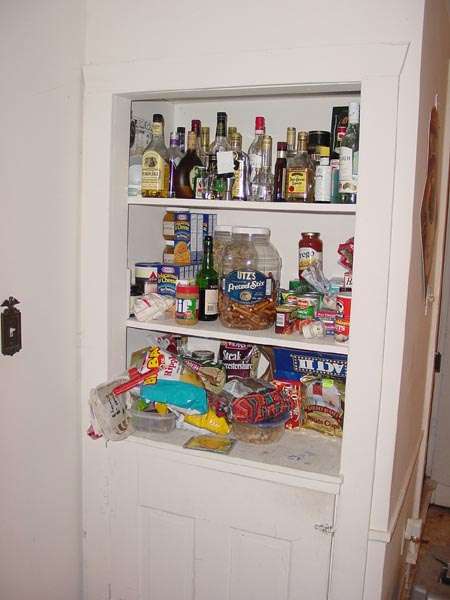

|  |
|
A very typical farmer's style in-the-wall cabinet resides here. It is surprisingly deep, giving ample room for old chinese take-out-menus and enough macaroni and ramen to choke a horse. Note the large and well-versed selection of high-caloric snack foods such as an enitre case of microwave popcorn, a barrel of pretzels, and no less than a half dozen (all open) bags of chips. The top cabinet is tastefully filled with cheap liquor. It's not a full blown bar, but it does have a satisfying spread of liquors that will get your hammered. Some of them are even in glass bottles. One or two don't have screw tops! [ Back to the basement door | What the heck is that in the middle of the alcohol? ] |